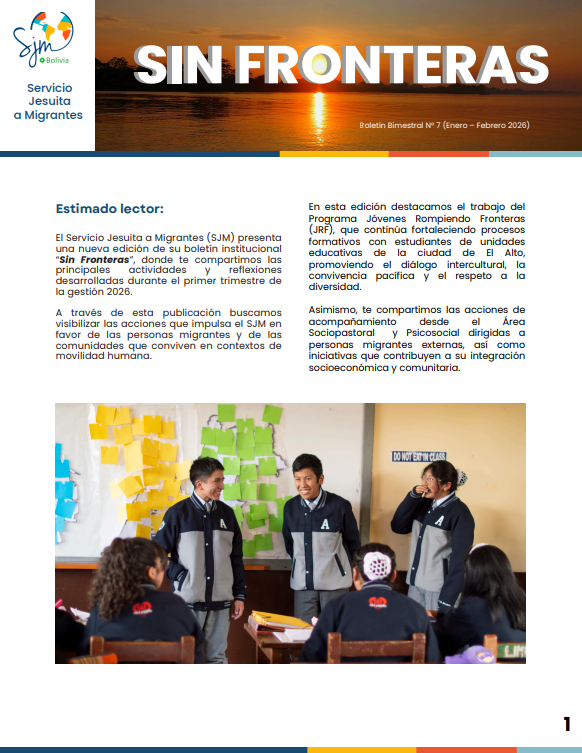
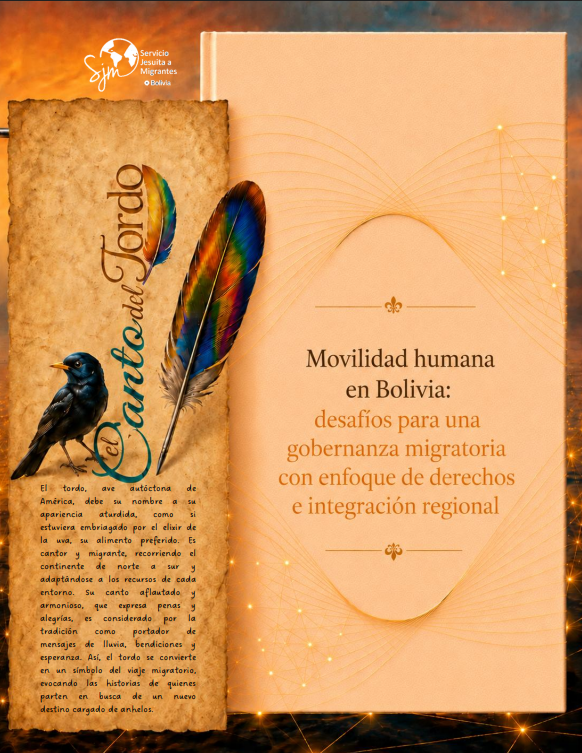
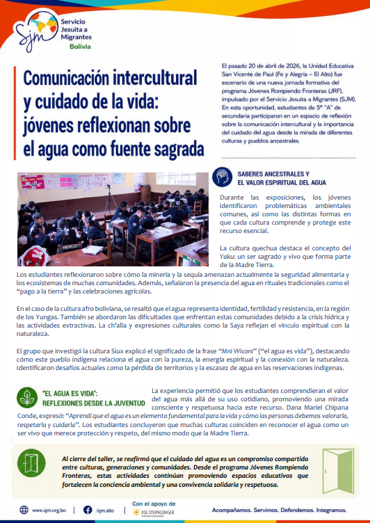
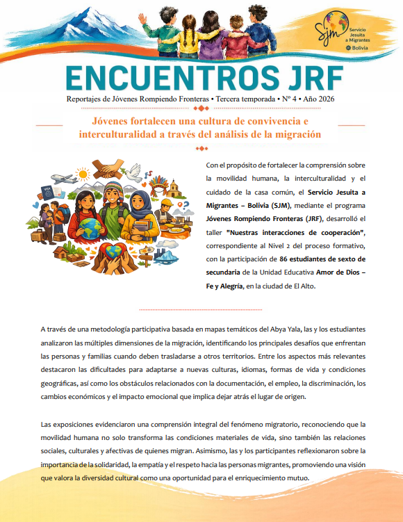
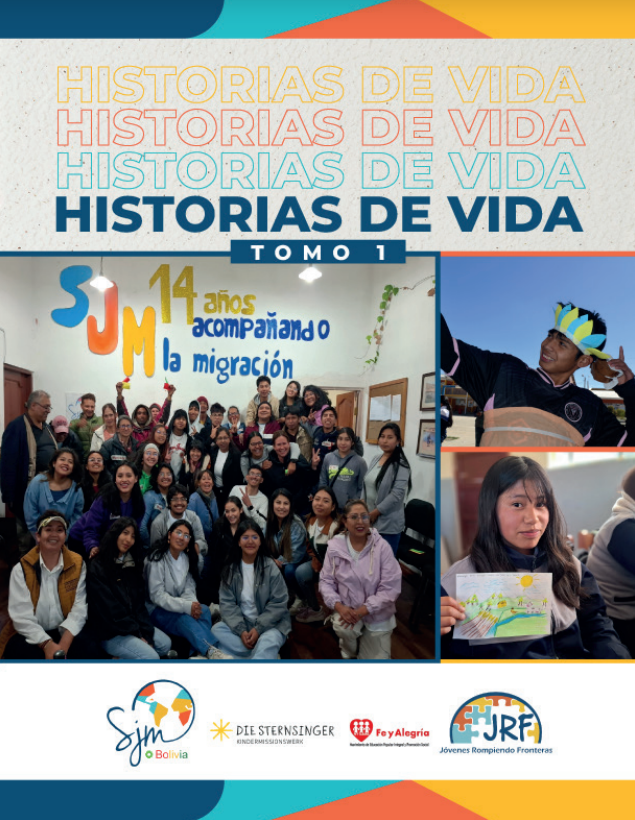
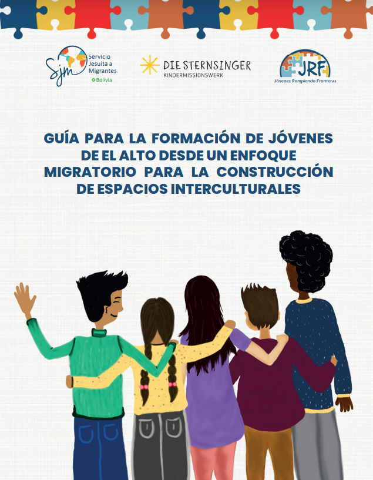

Explora los principales tipos de publicaciones institucionales del SJM Bolivia.

Esta edición de Sin Fronteras presenta las principales actividades desarrolladas por el SJM Bolivia durante el primer trimestre de 2026, destacando los procesos formativos del programa Jóvenes Rompiendo Fronteras y las acciones de acompañamiento social, psicosocial y sociopastoral dirigidas a personas migrantes.

Esta edición analiza la evolución de la migración internacional en Bolivia, destacando sus principales transformaciones, desafíos y oportunidades. Desde un enfoque de derechos humanos, examina la necesidad de fortalecer la gobernanza migratoria, la integración regional y la articulación institucional para construir una movilidad humana más segura, ordenada e inclusiva.

La nota presenta una jornada formativa del programa Jóvenes Rompiendo Fronteras, en la que estudiantes reflexionaron sobre el valor del agua desde distintas culturas y pueblos ancestrales. La actividad promovió el diálogo intercultural, el reconocimiento de saberes ancestrales y el compromiso de las juventudes con el cuidado del agua y de la vida.

La publicación presenta un proceso formativo de Jóvenes Rompiendo Fronteras, en el que estudiantes analizaron las múltiples dimensiones y desafíos de la migración. A través de una metodología participativa, reflexionaron sobre interculturalidad, empatía, solidaridad y respeto a las personas migrantes, fortaleciendo una cultura de convivencia y valoración de la diversidad.

Relatos que visibilizan trayectorias, desafíos, resiliencias y procesos de reconstrucción de vida de personas migrantes acompañadas por la institución.

Material orientado a fortalecer prácticas de convivencia, diálogo y construcción de espacios interculturales desde un enfoque de dignidad y hospitalidad.